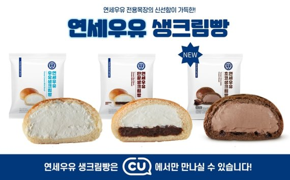

CU 연세우유생크림빵 — 편의점 인기 디저트
CU의 연세우유 생크림빵은 부드러운 빵과 우유 생크림이 잘 어울려 편의점 디저트 대표주자입니다. 아침·간식·야식으로 자주 찾는 제품이에요.
팁
CU 매장 위주로 판매됩니다. 유통기한이 짧으니 당일·익일 안에 드세요.

CU의 연세우유 생크림빵은 부드러운 빵과 우유 생크림이 잘 어울려 편의점 디저트 대표주자입니다. 아침·간식·야식으로 자주 찾는 제품이에요.
CU 매장 위주로 판매됩니다. 유통기한이 짧으니 당일·익일 안에 드세요.